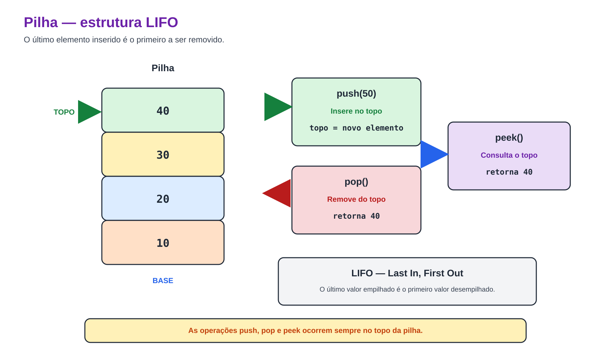
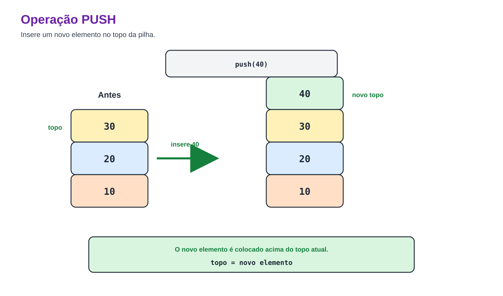
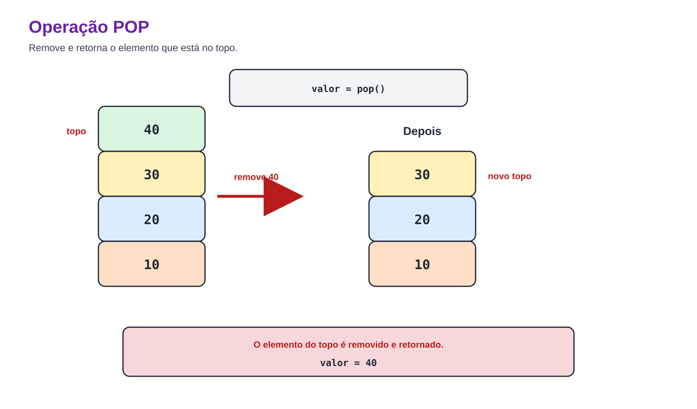

Prof. Me. Gustavo Ferreira Palma
Pilhas - Conceito
- Em diversas situações do cotidiano é necessário acessar primeiro o elemento inserido mais recentemente.
- Alguns exemplos são:
- histórico de navegação;
- desfazer ações em editores de texto;
- chamadas de funções durante a execução de um programa;
- pilha de pratos;
- pilha de livros.
- Todas essas aplicações seguem exatamente o mesmo princípio de funcionamento.
Pilhas - Conceito
- Uma pilha (Stack) é uma estrutura de dados linear em que as inserções e remoções ocorrem sempre na mesma
extremidade da estrutura, denominada Topo (Top).
- Esse comportamento é conhecido como LIFO (Last In, First Out), ou seja:
- O último elemento inserido será o primeiro a ser removido.
Pilhas - Conceito

Pilhas - Conceito
- Uma pilha pode ser implementada utilizando exatamente a mesma estrutura da lista encadeada.
//...
typedef struct No
{
int dado;
struct No *proximo;
} No;
//...
- A diferença está apenas nas operações permitidas.
Pilhas - Criação da Pilha
- Uma pilha vazia é representada por um ponteiro para o topo igual a NULL.
//...
No *topo = NULL;
//...
Pilhas - Empilhar (Push)
- A operação Push adiciona um novo elemento no topo da pilha.
- Como o topo corresponde ao início da lista, basta inserir o novo nó na primeira posição.
No *novo = malloc(sizeof(No));
if (novo == NULL)
{
printf("Erro ao alocar memória.\n");
return;
}
novo->dado = valor;
novo->proximo = *topo;
*topo = novo;
Pilhas - Empilhar (Push)

Pilhas - Desempilhar (Pop)
- A operação Pop remove o elemento localizado no topo.
- Após a remoção, o topo passa a apontar para o próximo elemento.
//...
if (*topo == NULL)
{
printf("Pilha vazia.\n");
return -1;
}
No *temp = *topo;
int valor = temp->dado;
*topo = temp->proximo;
free(temp);
return valor;
//...
Pilhas - Desempilhar (Pop)

Pilhas - Consultar a pilha (Peek)
- A operação Peek permite consultar o elemento localizado no topo da pilha sem removê-lo.
- Essa operação é muito utilizada quando é necessário conhecer o próximo elemento a ser processado.
//...
if (topo == NULL)
{
printf("Pilha vazia.\n");
return -1;
}
return topo->dado;
//...
Pilhas - Verificar Pilha Vazia
- Antes de realizar qualquer remoção, é necessário verificar se existem elementos armazenados.
//...
if(topo == NULL) { printf("Pilha vazia."); }
//...
- Essa verificação evita o acesso a posições inválidas da memória.
OBRIGADO!
Podem me encontrar aqui:
- gustavo.palma@unisal.edu.br
- www.gustavopalma.com.br